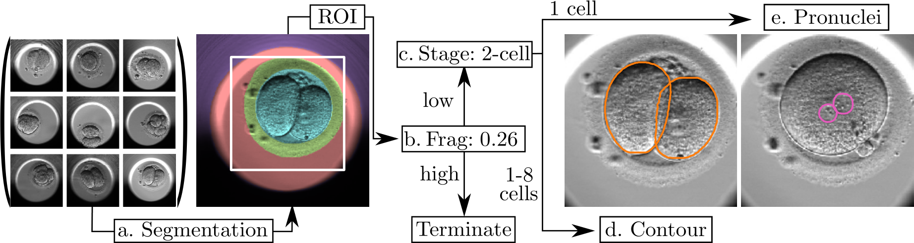

International Conference on Medical Image Computing and Computer Assisted Intervention (MICCAI), Oct. 2020.
Automated Measurement of Key Morphological
Features of Human Embryos for IVF
Authors
Helen Y. Yang
Harvard University
Robbert Struyven
Harvard University
Zhe Sun
Harvard University
Kylie R. Lee
Harvard University
Charlotte Royston
Harvard University
Liz Cam
Harvard University
Yael Kalma
Tel Aviv Sourasky Medical Center
Foad Azem
Tel Aviv Sourasky Medical Center
Dalit Ben-Yosef
Tel Aviv Sourasky Medical Center
Abstract

Overview of our method.
A major challenge in clinical In-Vitro Fertilization (IVF) is selecting the highest quality embryo to transfer to the patient in the hopes of achieving a pregnancy. Time-lapse microscopy provides clinicians with a wealth of information for selecting embryos. However, the resulting movies of embryos are currently analyzed manually, which is time consuming and subjective. Here, we automate feature extraction of time-lapse microscopy of human embryos with a machine-learning pipeline of five convolutional neural networks (CNNs). Our pipeline consists of (1) semantic segmentation of the regions of the embryo, (2) regression predictions of fragment severity, (3) classification of the developmental stage, and object instance segmentation of (4) cells and (5) pronuclei. Our approach greatly speeds up the measurement of quantitative, biologically relevant features that may aid in embryo selection.
Paper
arXiv
Source code
Source code will be available soon.
GitHub repo
Experiental results
Citation
@inproceedings{leahy2020automated,
title={Automated Measurements of Key Morphological Features of Human Embryos for IVF},
author={Leahy, BD and Jang, W-D and Yang, HY and Struyven, R and Wei, D and Sun, Z and Lee, KR and Royston, C and Cam, L and Kalma, Y and Azem, Foad and Ben-Yosef, Dalit and Pfister, Hanspeter and Needleman, Daniel},
booktitle={MICCAI},
year={2020}
}